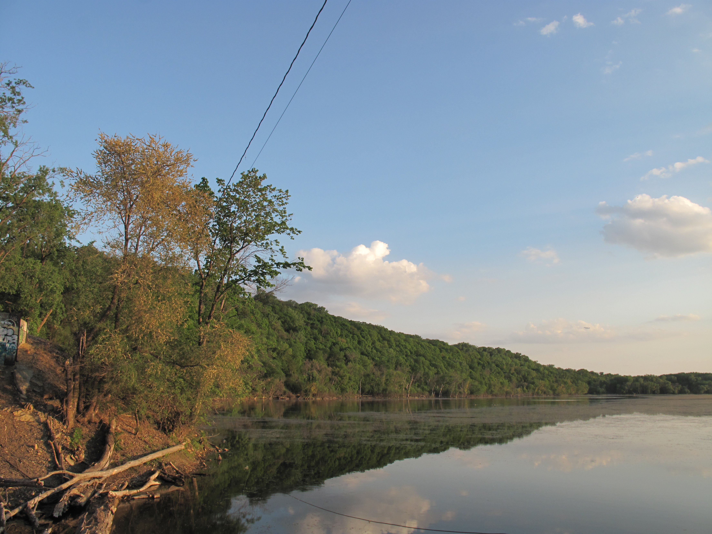

Ice Fishing at Pickerel Lake, Minnesota
By August Godfrey
About Pickerel Lake
Pickerel Lake is a popular Minnesota lake known for its clear water and healthy fish populations. During winter, the frozen lake becomes a great place for ice fishing, attracting anglers of all skill levels.
Ice Fishing Techniques
- Jigging: One of the most common techniques. Anglers move a small lure up and down to attract fish.
- Dead Sticking: A baited rod is left mostly still, which works well for cautious fish.
- Tip-Ups: These devices allow anglers to fish multiple holes at once and are great for northern pike.
- Hole Hopping: Drilling several holes and moving between them to find active fish.

Types of Fish in Pickerel Lake
- Walleye: A favorite among Minnesota anglers. Best caught near sunrise and sunset.
- Northern Pike: Large, aggressive fish often caught using tip-ups with live bait.
- Yellow Perch: Found in schools and commonly caught with small jigs.
- Bluegill: A popular panfish that is fun and easy to catch, especially for beginners.
- Crappie: Known for feeding higher in the water column during winter.
Safety Tips
Always check ice thickness before going out, wear warm layers, and bring safety gear such as ice picks. Ice conditions can change quickly, so staying alert is important.
Pickerel Lake Fishing Information